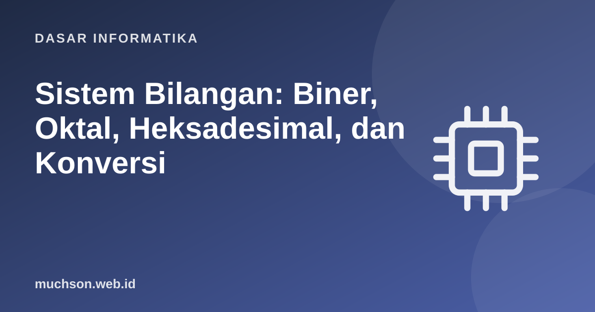

Beranda › Artikel › Dasar Informatika
Dasar InformatikaSistem Bilangan: Biner, Oktal, Heksadesimal, dan Konversi
Komputer hanya mengenal dua keadaan: ada atau tidak ada tegangan, 1 atau 0. Semua yang Anda lihat di layar, dari teks sampai video, adalah susunan bit. Memahami bilangan biner dan heksadesimal membuka pintu untuk memahami memori, jaringan, warna, dan keamanan dengan lebih jelas.
Sebaiknya sudah paham: aritmetika dasar

Setelah membaca dan mencoba materi ini, Anda mampu:
- menjelaskan sistem bilangan posisional dan nilai tempat
- mengonversi antara desimal, biner, oktal, dan heksadesimal
- melakukan operasi bit (AND, OR, XOR, geser)
- menjelaskan mengapa heksadesimal dipakai sebagai singkatan biner
- menerapkannya pada kode warna, izin berkas, dan masker jaringan
Nilai posisional
Bilangan desimal 4.092 berarti 4×10³ + 0×10² + 9×10¹ + 2×10⁰. Setiap posisi bernilai pangkat basis. Biner memakai basis 2 dengan digit 0 dan 1; setiap posisi bernilai pangkat dua.
| Basis | Nama | Digit | Awalan di kode | Contoh nilai 45 |
|---|---|---|---|---|
| 2 | Biner | 0–1 | 0b | 0b101101 |
| 8 | Oktal | 0–7 | 0o | 0o55 |
| 10 | Desimal | 0–9 | (tanpa) | 45 |
| 16 | Heksadesimal | 0–9, A–F | 0x | 0x2D |
Konversi
Desimal ke biner: bagi dua berulang
def ke_biner(n):
if n == 0: return "0"
sisa = []
while n > 0:
sisa.append(str(n % 2)) # sisa bagi dua = bit dari kanan
n //= 2
return "".join(reversed(sisa))
print(ke_biner(45))
print(bin(45), oct(45), hex(45)) # fungsi bawaan Python
print(int("101101", 2), int("55", 8), int("2D", 16)) # kembali ke desimal101101
0b101101 0o55 0x2d
45 45 45
Biner ke oktal dan heksadesimal: kelompokkan bit
Satu digit heksa mewakili tepat empat bit, dan satu digit oktal tiga bit. Itu sebabnya heksa dipakai sebagai singkatan biner yang manusiawi.
biner = "1101011110100011"
kelompok = [biner[i:i+4] for i in range(0, len(biner), 4)]
print(kelompok)
print("heksa:", "".join(format(int(k, 2), "X") for k in kelompok))
print(f"cek : {int(biner, 2):#X}")
for h in "0123456789ABCDEF":
print(h, format(int(h, 16), "04b"), end=" ")
print()['1101', '0111', '1010', '0011']
heksa: D7A3
cek : 0XD7A3
0 0000 1 0001 2 0010 3 0011 4 0100 5 0101 6 0110 7 0111 8 1000 9 1001 A 1010 B 1011 C 1100 D 1101 E 1110 F 1111
Operasi bit
| Operasi | Simbol | Aturan | Contoh (4 bit) |
|---|---|---|---|
| AND | & | 1 jika keduanya 1 | 1100 & 1010 = 1000 |
| OR | | | 1 jika salah satu 1 | 1100 | 1010 = 1110 |
| XOR | ^ | 1 jika berbeda | 1100 ^ 1010 = 0110 |
| NOT | ~ | membalik bit | ~1100 = 0011 (4 bit) |
| Geser kiri | << | kalikan 2 per posisi | 0011 << 1 = 0110 |
| Geser kanan | >> | bagi 2 (dibulatkan ke bawah) | 1100 >> 2 = 0011 |
a, b = 0b1100, 0b1010
print(f"{a:04b} & {b:04b} = {a & b:04b}")
print(f"{a:04b} | {b:04b} = {a | b:04b}")
print(f"{a:04b} ^ {b:04b} = {a ^ b:04b}")
print(f"3 << 2 = {3 << 2} (3 x 2^2)")
print(f"100 >> 3 = {100 >> 3} (100 // 2^3)")
# penerapan: memeriksa dan mengubah satu bit sebagai "bendera"
IZIN_BACA, IZIN_TULIS, IZIN_JALAN = 0b100, 0b010, 0b001
izin = IZIN_BACA | IZIN_TULIS
print("bisa tulis?", bool(izin & IZIN_TULIS), " bisa jalan?", bool(izin & IZIN_JALAN))
izin |= IZIN_JALAN # nyalakan
izin &= ~IZIN_TULIS # matikan
print("izin akhir:", format(izin, "03b"), "= oktal", oct(izin)[2:])1100 & 1010 = 1000
1100 | 1010 = 1110
1100 ^ 1010 = 0110
3 << 2 = 12 (3 x 2^2)
100 >> 3 = 12 (100 // 2^3)
bisa tulis? True bisa jalan? False
izin akhir: 101 = oktal 5
Di mana biner dan heksa muncul
# 1. Warna: #RRGGBB, tiap pasangan heksa = 0..255
warna = "#1E5AB2"
r, g, b = (int(warna[i:i+2], 16) for i in (1, 3, 5))
print("RGB:", r, g, b)
# 2. Alamat IPv4 = 32 bit; masker /24 = 24 bit pertama bernilai 1
masker = (0xFFFFFFFF << (32 - 24)) & 0xFFFFFFFF
print("masker /24:", ".".join(str((masker >> s) & 255) for s in (24, 16, 8, 0)))
# 3. ASCII: karakter adalah angka
print([ord(c) for c in "Hai"], [format(ord(c), "08b") for c in "Hai"])
print("kapasitas: 8 bit =", 2**8, "nilai; 32 bit =", f"{2**32:,}", "nilai")RGB: 30 90 178
masker /24: 255.255.255.0
[72, 97, 105] ['01001000', '01100001', '01101001']
kapasitas: 8 bit = 256 nilai; 32 bit = 4,294,967,296 nilai
"Ada 10 jenis orang di dunia: yang mengerti biner dan yang tidak." Dalam biner, 10 adalah dua. Lelucon klasik ini mengingatkan bahwa angka hanyalah lambang; nilainya ditentukan oleh basis.
1. Ubah 200 ke biner dan heksa.
2. Berapa nilai desimal 0xFF dan 0b11111111?
3. Izin berkas 640 berarti apa?
4. Berapa nilai berbeda yang dapat disimpan 10 bit?
- Sistem posisional: setiap posisi bernilai pangkat basis.
- Konversi: bagi berulang (ke biner), jumlah nilai posisi (dari biner), kelompok 4 bit untuk heksa.
- Operasi bit: AND, OR, XOR, NOT, geser.
- Heksa adalah singkatan biner yang ringkas: warna, alamat memori, izin, masker.
Tanya jawab
Mengapa komputer memakai biner?
Bagaimana bilangan pecahan dalam biner?
Apa itu bit, byte, kilobyte?
Referensi
- David Patterson dan John Hennessy, Computer Organization and Design (Morgan Kaufmann)
- Harvard CS50: Introduction to Computer Science
- Nisan dan Schocken, The Elements of Computing Systems (nand2tetris), MIT Press
- Charles Petzold, Code: The Hidden Language of Computer Hardware and Software (Microsoft Press)